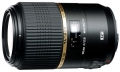

器材
党
全部器材
产品年表
名词百科
榜单
器材库
> 35mm画幅AF定焦镜头 > SP Di 90/2.8 MACRO 1:1 VC USD

腾龙
SP Di 90/2.8 MACRO 1:1 VC USD
4.61
综合评分
分类
35mm画幅AF定焦镜头
点评
0 条
图片
0 张
评测
6 篇
该镜头采用14片11组的镜片结构，最近对焦距离为0.3m，最大放大倍率为1.0倍，采用9片圆形光圈叶片。具有简易防滴溅构造。并搭载了VC光学防抖及USD超声波马达。
产品类型
35mm画幅AF定焦镜头
综合评分
4.61分
无忌评测
延续传奇 腾龙新90微距评测
规格参数
网友点评
(0)
产品图 / 样片
(0)
评测文章
(6)
详细规格
镜头类型
微距镜头
发布日期
2012-09-14
厂家推荐价格
94,500.00 （日元）
焦距
90mm
最大光圈
f/2.8
最小光圈
f/32
视角（对角）
27.33
镜头结构
14片/11组
低/超低色散镜片
1/2片
光圈叶片
9 (圆形叶片)片
最近对焦距离
30cm
最大放大倍率
1倍
驱动马达
USD（超声波马达）
镜头卡口
Canon EF, Minolta/Konica-Minolta/Sony AF, Nikon AF
防抖
是
颜色
黑色
尺寸
76.4x114.5mm
重量
550g
备注
索尼卡口(不搭载VC系统)
该产品暂无存档的网友点评
该产品暂无存档的产品图
评测 / 相关文章
延续传奇 腾龙新90微距评测
（存档）
［试用］腾龙新90/2.8:微距里的性价比之王
（存档）
［行情］腾龙传奇90微距镜头特价！
（原站已下线）
［资讯］EISA 2013-2014年度影音设备大奖
（存档）
［试用］新款腾龙SP 90/2.8 Di(F004)开箱
（存档）
［资讯］腾龙宣布开发90/2.8微距镜头
（存档）
相关文章
［试用］腾龙新90/2.8:微距里的性价比之王
（存档）
［行情］腾龙传奇90微距镜头特价！
（原站已下线）
［资讯］EISA 2013-2014年度影音设备大奖
（存档）
［试用］新款腾龙SP 90/2.8 Di(F004)开箱
（存档）
［试用］延续传奇 腾龙新90微距评测
（存档）
［资讯］腾龙SP Di 90/2.8 MACRO 1:1 VC USD
（存档）
［资讯］腾龙宣布开发90/2.8微距镜头
（存档）